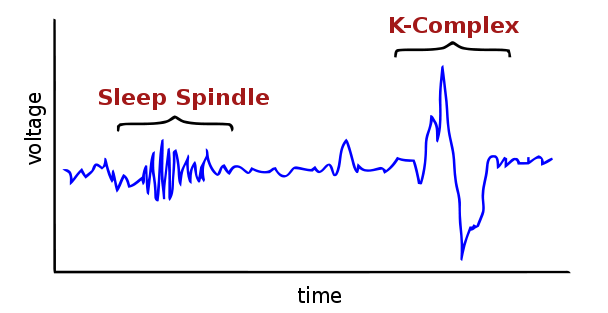
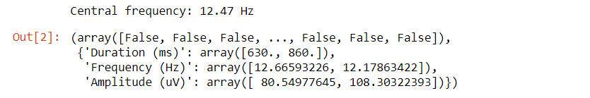

A simple and efficient sleep spindles detector
September 2018
Welcome to this second tutorial on EEG signal processing in Python!
We are going to see how to create a simple yet efficient sleep spindles detection algorithm in Python based on Morlet's wavelet.
Foreword
Sleep spindles are one of the landmarks and defining characteristics of N2 sleep, which is the sleep stage in which you spend the more time during the night (~50%).
According to the formal definition by the American Academy of Sleep Medicine (AASM), a sleep spindle is "a train of distinct 11–16 Hz waves, predominant over central EEG derivations and lasting more than 0.5 s".
Here's what it looks like:

Sleep spindles are particularly important for sleep researchers because they have been related to sleep regulation and cognitive abilities (notably memory and learning) and are altered in several neuropsychiatric diseases.
There is also a considerable variability between individuals in both the quantity and properties of spindles, partly attributable to age, sex, and genetic factors.
For a more completed review on sleep spindles, please see this recent article by Purcell and colleagues.
Because of the large number of spindles typically seen in one night, visual identification is not a reasonable option because it would require too much time.
Rather, a growing amount of research has been dedicated to finding the best possible automatic detection algorithm that could adapt to a variety of spindles morphologies and data quality.
As a result, most sleep labs around the world use their own in-house sleep spindles algorithm, which are often closed-source and not validated.
I want to emphasize that the goal of this tutorial is NOT to provide the best spindles detection algorithm out there! Rather, I just want to show how to create an efficient and simple algorithm (less than 20 lines of Python code).
However, if you are looking for a more advanced algorithm, I invite you to have a look at my GitHub repository YASA (Yet Another Spindle Algorithm).
Data loading
For the sake of this tutorial, please find below a 15-seconds extract of real N2 sleep from one young individual. The sampling frequency is 200 Hz and the channel is Cz.
Let's load the data in Python. For this tutorial, you will require numpy, scipy, matplotlib, seaborn and mne. Make sure to install these dependencies before going further!
import numpy as np
import seaborn as sns
import matplotlib.pyplot as plt
from scipy.signal import detrend
from mne.time_frequency import morlet
# Load the data
x = np.loadtxt('data_spindles_15s_200Hz.txt')
# Define sampling frequency and time vector
sf = 200.
times = np.arange(x.size) / sf
# Plot the signal
sns.set(context='talk')
fig, ax = plt.subplots(1, 1, figsize=(12, 4))
ax.plot(times, x, lw=1.75)
ax.set_xlim(0, times[-1])
ax.set_xlabel('Time [sec]')
ax.set_ylabel('Voltage [uV]')
ax.set_title('Cz EEG signal')
Ok, so one can clearly see that there are two nice sleep spindles in this 15-sec window, one starting at ~3 seconds and the other at ~13 sec (immediately after a K-complex).
Wavelet convolution
There are many possible ways to automatically detect these two spindles. For instance, a typical approach is to bandpass filter the signal in the spindles frequency range (sigma = 11 - 16 Hz), then compute the envelope of the signal and apply an arbitrary threshold.
The method we are going to see today is slightly different: we are going to convolve our signal with a Morlet's wavelet designed to have the optimal properties for detecting spindles-like activity. In very simple terms, we are going to create a small signal that looks exactly like a spindles and slide it (i.e. multiply it or to be exact convolve it) through our signal.
Therefore, if a real spindles is present in the signal, it is going to be multiplied by our fake, spindle-like wavelet, thus resulting in a very high amplitude signal.
An important thing to understand is that we are going to use a complex wavelet (by opposition with a real-valued wavelet), which will allow us to not only extract the amplitude but also the phase and frequency of the spindles.
Don't fret if that sounds too complicated, you will see that it is in fact really simple to implement! Let's first create our wavelet:
# Parameters
cf = 13 # Central spindles frequency in Hz
nc = 12 # Number of oscillations in the spindles
# Compute the wavelet
wlt = morlet(sf, [cf], n_cycles=nc)[0]
# Plot
t = np.arange(wlt.size) / sf
fig, ax = plt.subplots(1, 1, figsize=(7, 4))
ax.plot(t, wlt)
plt.ylim(-0.4, 0.4)
plt.xlim(t[0], t[-1])
plt.xlabel('Time [seconds]')
plt.ylabel('Amplitude [a.u.]')
Looks familiar, doesn't it? The two main parameters for the wavelet are the central spindles frequency and the number of oscillations. The spindles frequency is known to be strongly dependant of age (and other demographic factors) so it is important to adjust this parameter to your data.
Alternatively, as we'll see later, you can simply compute a power spectrum of the signal and find the peak frequency within the 11 to 16 Hz range. The number of oscillations controls the trade-off between time and frequency resolution: the larger it is, the more specific the wavelet is to this specific central frequency. By contrast, the smaller this number is, the better the temporal resolution of our wavelet is. For spindles detection, default values of 7 or 12 are usually very good compromises.
Now that we have our wavelet, let's convolve it (i.e slide it through) our signal, and then apply a threshold. To further increase sensitivity, we will square the wavelet-convolved signal (i.e. take the power) and then normalize it from 0 to 1. This last step is important to allow for a reproducible threshold (i.e. that is not dependant of the original data).
For the sake of this tutorial, we'll use a very simple and arbitrary fixed threshold of 0.25.
# Convolve the wavelet and extract magnitude and phase
analytic = np.convolve(x, wlt, mode='same')
magnitude = np.abs(analytic)
phase = np.angle(analytic)
# Square and normalize the magnitude from 0 to 1 (using the min and max)
power = np.square(magnitude)
norm_power = (power - power.min()) / (power.max() - power.min())
# Define the threshold
thresh = 0.25
# Find supra-threshold values
supra_thresh = np.where(norm_power >= thresh)[0]
# Create vector for plotting purposes
val_spindles = np.nan * np.zeros(x.size)
val_spindles[supra_thresh] = x[supra_thresh]
# Plot
fig, (ax1, ax2) = plt.subplots(2, 1, figsize=(12, 7), sharex=True)
ax1.plot(times, x, lw=1.5)
ax1.plot(times, val_spindles, color='indianred', alpha=.8)
ax1.set_xlim(0, times[-1])
ax1.set_ylabel('Voltage [uV]')
ax1.set_title('Cz EEG signal')
ax2.plot(times, norm_power)
ax2.set_xlabel('Time [sec]')
ax2.set_ylabel('Normalized wavelet power')
ax2.axhline(thresh, ls='--', color='indianred', label='Threshold')
ax2.fill_between(times, norm_power, thresh, where = norm_power >= thresh,
color='indianred', alpha=.8)
plt.legend(loc='best')
Well, we can see that our simple wavelet convolution and arbitrary thresholding do an excellent job at identifying the two spindles in our signal!
Extract spindles parameters
Now that we have detected our spindles, let's compute some relevant metrics, such as their durations, amplitudes and frequencies. The duration can be simply extracted by finding the start and end of each spindles. The amplitude can be extracted by finding the peak-to-peak amplitude of the detrended original signal.
The frequency is slightly more complicated (and there are many ways one could compute it). The approach I chose here is to take the median of the instantaneous frequencies of each data point within the detected spindle.
The instantanenous frequency can be extracted using the first-derivative of the phase of the analytic signal (see here for more details).
Another, perhaps simpler, approach could be to compute the power spectral density of the spindles and then take the peak frequency within the 11 - 16 Hz range.
# Extract start and end of each spindles
sp = np.split(supra_thresh, np.where(np.diff(supra_thresh) != 1)[0] + 1)
idx_start_end = np.array([[k[0], k[-1]] for k in sp])
# Extract the duration (in ms) of each spindles
sp_dur = (np.diff(idx_start_end, axis=1) / sf * 1000).flatten()
# Extract the peak-to-peak amplitude and frequency
sp_amp, sp_freq = np.zeros(len(sp)), np.zeros(len(sp))
for i in range(len(sp)):
# Important: detrend the signal to avoid wrong peak-to-peak amplitude
sp_amp[i] = np.ptp(detrend(x[sp[i]]))
# Median of the instantaneous frequency of the spindles, where:
# inst_freq = sf / 2pi * 1st-derivative of the phase of the analytic signal
sp_freq[i] = np.median((sf / (2 * np.pi) * np.diff(phase[sp[i]])))
# Create a dictionnary
sp_params = {'Duration (ms)' : sp_dur, 'Frequency (Hz)': sp_freq,
'Amplitude (uV)': sp_amp}
print(sp_params)
Which should return:
Duration (ms) : [725., 870.]
Frequency (Hz) : [12.79, 12.30]
Amplitude (uV) : [85.87, 116.79]
Good news, our detected spindles are likely to be true spindles: their durations, amplitudes and frequencies are consistent with what we know about the typical morphology of spindles. Using these values, there are many ways to improve this simple detection. For instance, we know that according to the AASM definition spindles must last at least 0.5 seconds, so it would be easy to reject all the detected events that are, say, less than 0.4-0.5 seconds. Likewise, we could apply thresholds for the frequency and the amplitude.
A wrapper function
import numpy as np
def spindles_detect(x, sf, thresh=0.25, wlt_params={'nc': 12, 'cf': 'auto'}):
"""Simple spindles detector based on Morlet wavelet.
Parameters
----------
x : 1D-array
EEG signal
sf : float
Sampling frequency
thresh : float
Threshold (0 - 1)
wlt_params : dict
Morlet wavelet parameters ::
'nc' : number of oscillations
'cf' : central frequency (int or 'auto')
Returns
-------
supra_thresh_bool : 1D-array (boolean)
Boolean array indicating for each point if it is a spindles or not.
sp_params : dict
Spindles parameters dictionnary.
"""
from scipy.signal import detrend
from mne.time_frequency import morlet, psd_array_multitaper
if wlt_params['cf'] == 'auto':
# Compute the power spectrum and find the peak 11-16 Hz frequency.
psd, freqs = psd_array_multitaper(x, sf, fmin=11, fmax=16, verbose=0)
wlt_params['cf'] = freqs[np.argmax(psd)]
print('Central frequency: %.2f Hz' % wlt_params['cf'])
# Compute the wavelet and convolve with data
wlt = morlet(sf, [wlt_params['cf']], n_cycles=wlt_params['nc'])[0]
analytic = np.convolve(x, wlt, mode='same')
phase = np.angle(analytic)
# Square and normalize the magnitude from 0 to 1 (using the min and max)
power = np.square(np.abs(analytic))
norm_power = (power - power.min()) / (power.max() - power.min())
# Find supra-threshold values and indices
supra_thresh_bool = norm_power >= thresh
supra_thresh_idx = np.where(supra_thresh_bool)[0]
# Extract duration, frequency and amplitude of spindles
sp = np.split(supra_thresh_idx, np.where(np.diff(supra_thresh_idx) != 1)[0] + 1)
idx_start_end = np.array([[k[0], k[-1]] for k in sp])
sp_dur = (np.diff(idx_start_end, axis=1) / sf).flatten() * 1000
sp_amp, sp_freq = np.zeros(len(sp)), np.zeros(len(sp))
for i in range(len(sp)):
sp_amp[i] = np.ptp(detrend(x[sp[i]]))
sp_freq[i] = np.median((sf / (2 * np.pi) * np.diff(phase[sp[i]])))
sp_params = {'Duration (ms)' : sp_dur, 'Frequency (Hz)': sp_freq,
'Amplitude (uV)': sp_amp}
return supra_thresh_bool, sp_params
# Run the function
x = np.loadtxt('data_spindles_15s_200Hz.txt')
sf = 200
spindles_detect(x, sf, thresh=0.25)
Which should return:
Note that we are automatically finding the peak central frequency using a multitaper power spectral density estimate.
This has the advantage of being very accurate but can be extremely slow if you have several hours of data.
In that case, I would recommand using the
psd_array_welch
function of MNE with a window of 4-10 seconds,
or even choosing a priori a central frequency, like we did earlier in this tutorial.
Please feel free to contact me if you see any bugs, have any questions and/or ideas for improvement!